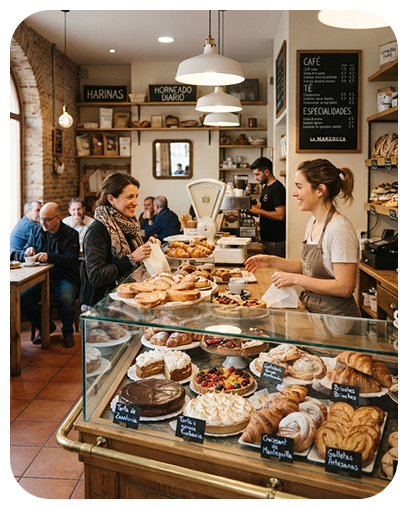
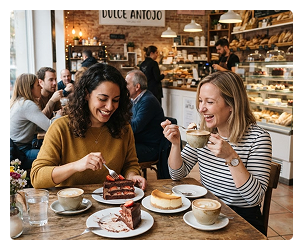

¡Bienvenidos al rincón más dulce de la web! Si has llegado hasta aquí, es porque compartes con nosotros una debilidad inconfundible: el amor por lo bien hecho, lo recién horneado y ese toque de dulzura que alegra cualquier momento del día. En la Panadería Fondant, creemos firmemente que un postre no es solo una mezcla de harina, azúcar y mantequilla. Cada pastel, galleta o brownie que sale de nuestro horno cuenta una historia y lleva impregnado un pedacito de nuestra pasión. Hoy queremos contarte qué es lo que hace que cada bocado sea una experiencia inolvidable.
Muchos nos preguntan cuál es el secreto para lograr esa textura perfecta en nuestros bizcochos o ese balance exacto de dulzor en nuestras cremas. La respuesta es simple: respeto por la materia prima.


Publica algo para conocer tu opinion.